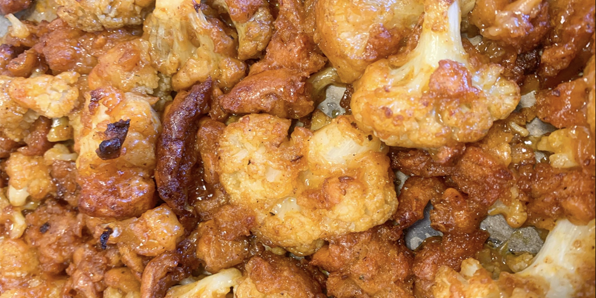

BAKED
BBQ CAULIFLOWER WINGS
Perfect party snack for all Your vegetarian (or not) friends!
Also, my anti anti vege brother loves them, SO THAT SAYS A LOT, RIGHT?

prep time: 10 minutes
cook time: 40 minutes
1tsp paprika
2tsp ribs (or any other meat) seasoning
1/2 tsp pepper
1tsp salt
3/4cup (180ml) milk or milk alternative
1 head cauliflower
3/4cup (180ml) bbq sauce
1Tbsp honey
2Tbsp coconut oil or vegetable oil
Stir until well-combined.
https://gimmedelicious.com/wp-content/uploads/2016/01/caulfilower-buffalo-wings-6-of-17.jpg
making sure each piece is evenly coated. Arrange the coated cauliflower on the baking sheet.
Bake for 20 minutes, flipping halfway.
combine the bbq sauce, oil,
and honey.
Stir until evenly coated.
Coat the wings with the mixture
and bake for another 20 minutes.
FAT.............................6.5 g
CARBS......................49.1 g
PROTEIN..................8.5 g

but it is actually so quick and easy to make!
My friends are gonna love them!